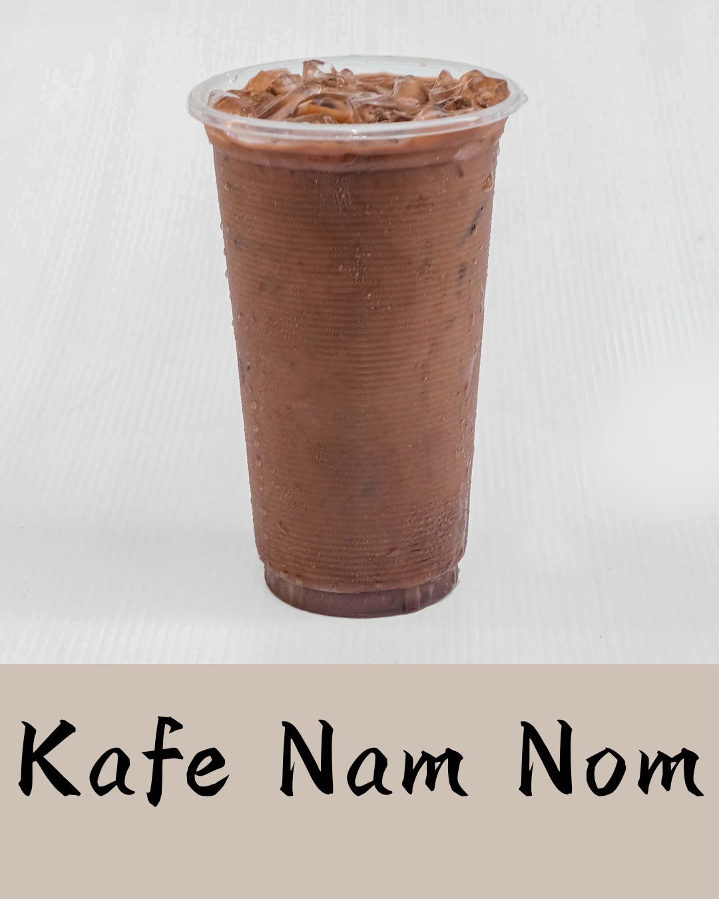
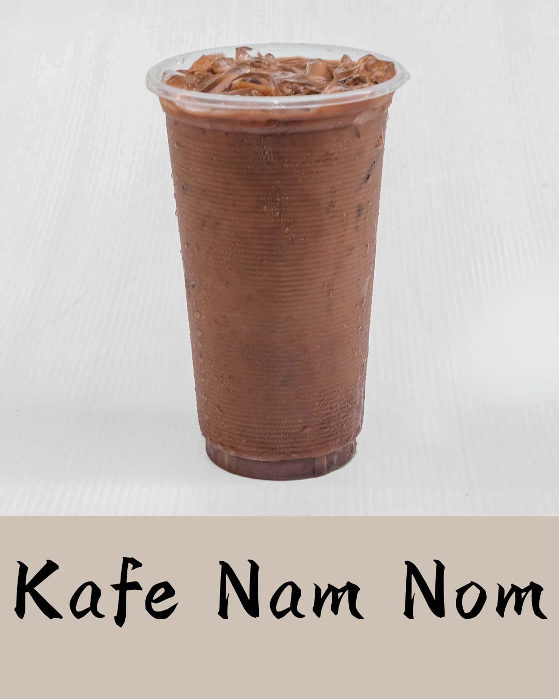
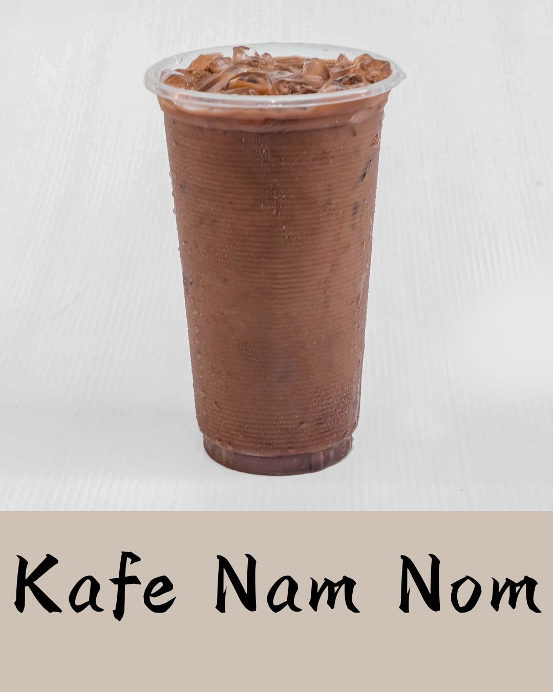

一个隐藏的宝石： Bolaven 高原的力量
咖啡由法国人引入老挝，此后成为日常生活和国家经济的关键部分。
围绕肥沃的火山性 Bolaven 高原展开，老挝咖啡提供了浓郁的地方风味。
文化意义：甜美、韧性与日常能量
老挝咖啡，或称 Kafé
Lao，以其强劲的力量和甜美的制备而著称，为热带气候提供了理想的能量来源。
独特风格
甜美而浓郁：传统做法是用深烘豆冲煮，并用炼乳大量加糖来增甜。
冰镇主打：由于炎热，最常见的形式是冰咖啡（Kafé
Yen），放在冰块上供应，浓密、强劲且甜美的咖啡因提升。
日常与经济角色
路边摊：咖啡随处可见，来自路边小摊和咖啡馆，成为快速休息点和非正式会面的场所。
经济驱动： Bolaven
高原出产的咖啡是重要的出口商品，也是数千个老挝农户收入的主要来源。
